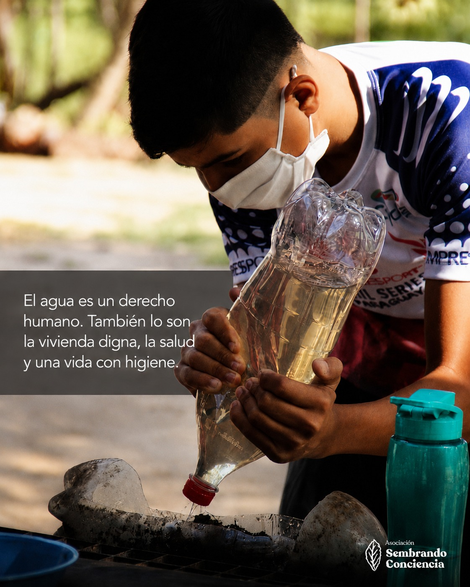
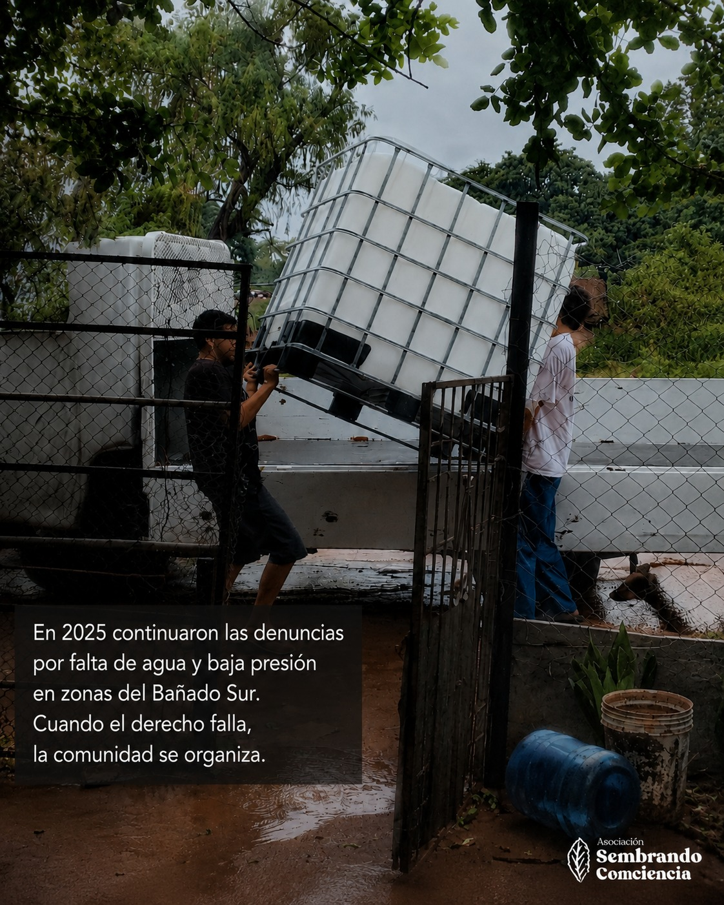
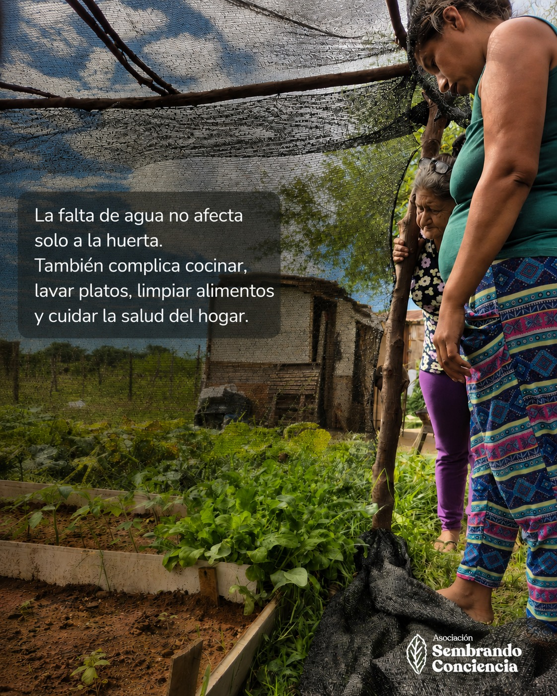
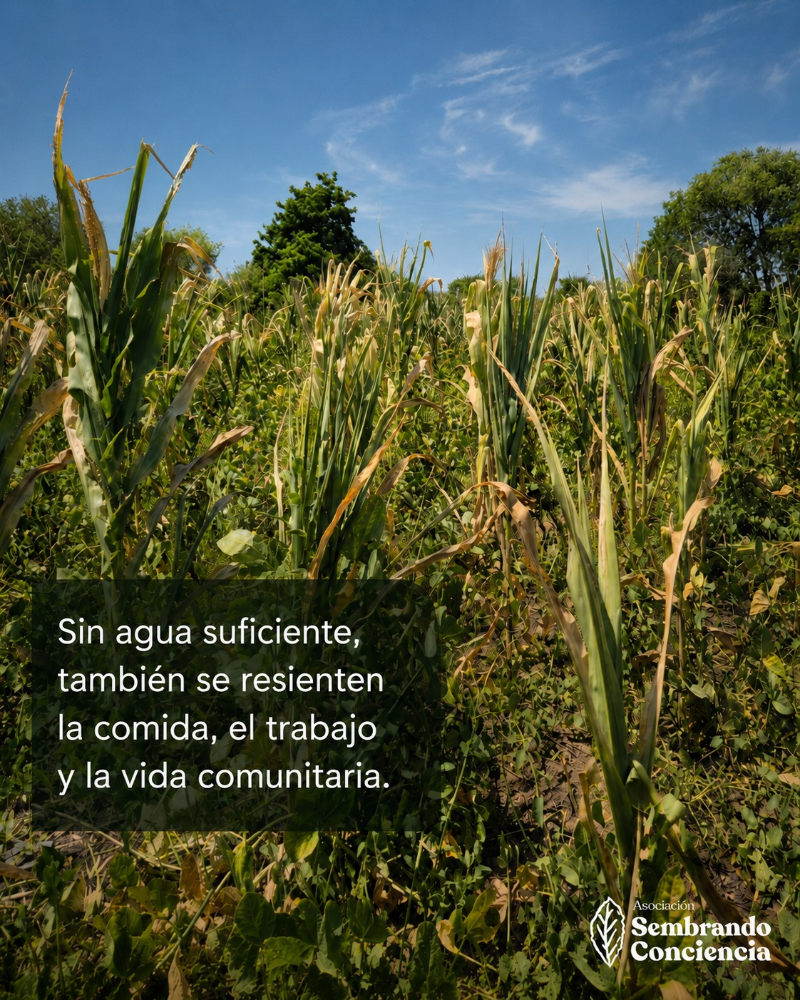
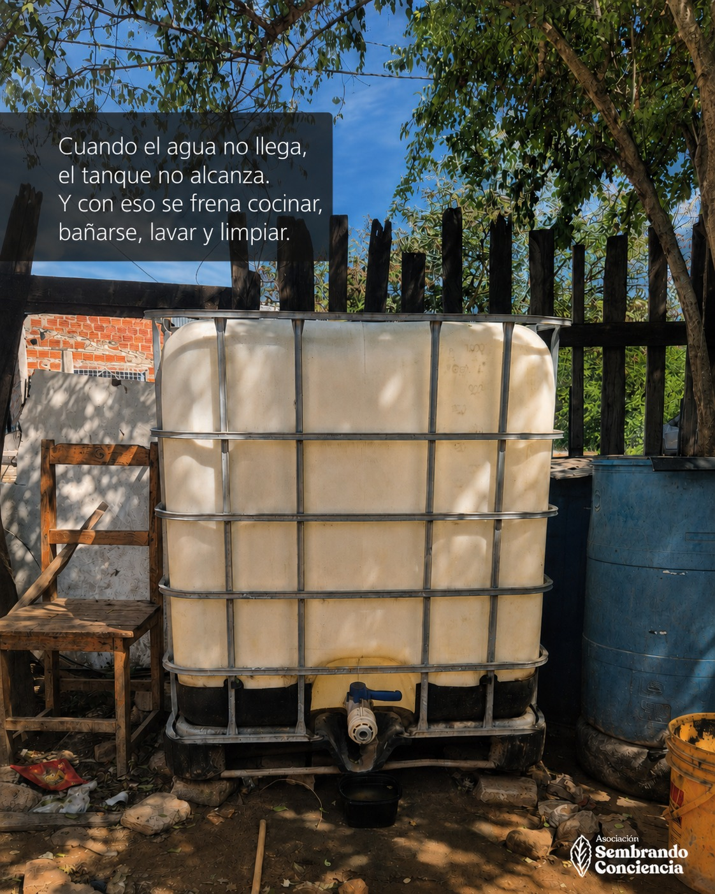
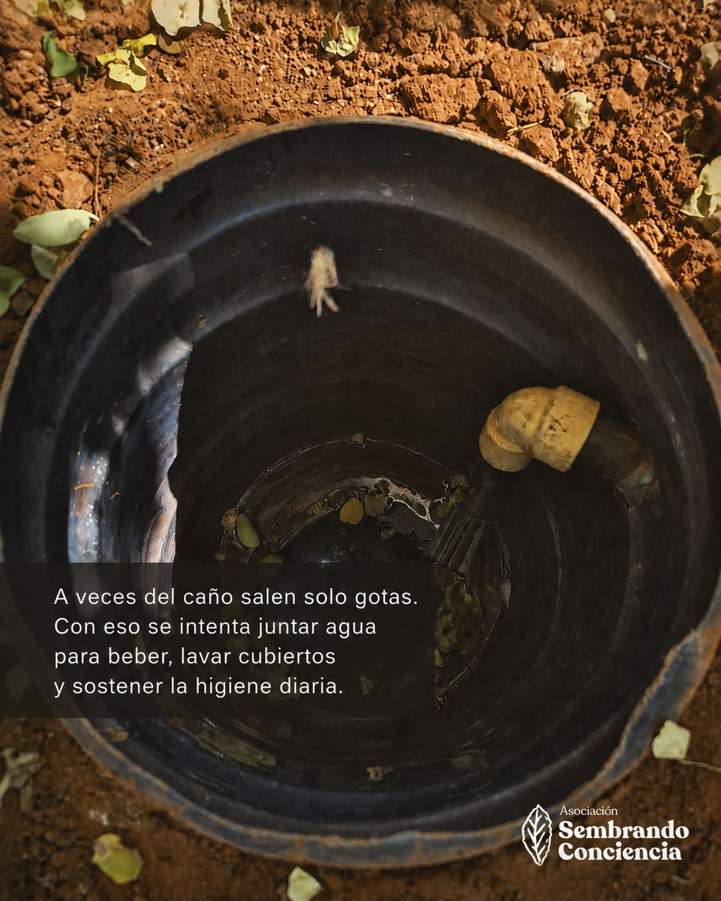

22 de marzo de 2025 · Agua y resiliencia climática
Día del Agua: en los bañados, el derecho todavía espera
En plena capital del Paraguay, muchas familias de los Bañados de Asunción siguen viviendo entre el río y la falta de agua segura. El 22 de marzo, Día Mundial del Agua, Sembrando Conciencia eligió hablar de esa contradicción: una ciudad rodeada de agua donde el agua no llega.
El agua es un derecho humano. También lo son la vivienda digna, la salud y una vida con higiene.
Los bañados son un territorio particular. Están en la orilla del río Paraguay, en el corazón de Asunción, y concentran a miles de familias que viven en condiciones de alta vulnerabilidad. Entre esas condiciones, una de las más persistentes es la falta de acceso regular al agua potable.

Cuando el servicio no llega, la comunidad se organiza
En 2025, las denuncias por falta de agua y baja presión en zonas del Bañado Sur continuaron. No es un problema nuevo: es una realidad estructural que se repite año a año, con distintos niveles de gravedad según la época y el territorio.
Cuando el sistema falla, las comunidades responden con sus propios recursos. Tanques, bidones, distribución entre vecinos. No por comodidad ni por opción, sino porque no hay otra forma de asegurar lo básico.

En 2025 continuaron las denuncias por falta de agua y baja presión en zonas del Bañado Sur. Cuando el derecho falla, la comunidad se organiza.
Una lucha que va más allá de la sed
La falta de agua no afecta solo a la huerta, aunque la huerta sea uno de los espacios donde se hace más visible. También complica cocinar, lavar platos, limpiar alimentos y cuidar la salud del hogar. Son tareas cotidianas que se vuelven complicadas cuando el agua no está garantizada.


Sin agua suficiente, también se resienten la comida, el trabajo y la vida comunitaria. Las huertas que Sembrando Conciencia acompaña no son solo proyectos productivos: son espacios de soberanía alimentaria que dependen directamente del acceso al agua. Cuando el agua falla, la huerta falla. Y cuando la huerta falla, la mesa se complica.
Guardar agua como forma de resistir
En muchos hogares de los bañados, guardar agua no es un hábito ni una precaución: es una necesidad. Los grandes tanques de almacenamiento —los mismos que Sembrando Conciencia ha ayudado a instalar en distintas comunidades— son una respuesta práctica a un problema que no debería existir.

Guardar agua no es comodidad. Es una forma de resistir cuando el servicio llega mal, llega tarde o no llega.
Sembrando Conciencia ha participado en la instalación de 20 tanques de 1.000 litros y 1.000 metros de cañerías en comunidades de los Bañados, con foco en Banco Hovy. Cada tanque instalado es una respuesta concreta a una necesidad real. Y también es un recordatorio de que esa necesidad no debería existir.
La realidad que no cierra
A veces del caño salen solo gotas. Con eso se intenta juntar agua para beber, lavar cubiertos y sostener la higiene diaria. Es una imagen que parece imposible en una capital, pero es parte de la cotidianidad de muchas familias en los bañados.


Cuando el agua no llega, el tanque no alcanza. Y con eso se frena cocinar, bañarse, lavar y limpiar.
El Día Mundial del Agua no es una fecha para celebrar: es una oportunidad para visibilizar lo que falta. En los Bañados de Asunción, el agua es simultáneamente el paisaje y la carencia. El río está, pero el derecho al agua potable todavía espera.
Sembrando Conciencia sigue acompañando a las comunidades que enfrentan esta realidad. No solo con tanques y cañerías, sino con la convicción de que el acceso al agua es un derecho que se defiende juntos.
Sobre este registro: Las imágenes y los textos de esta nota son materiales producidos por la Asociación Sembrando Conciencia en el marco de la campaña por el Día Mundial del Agua de 2025. Las cifras sobre tanques y cañerías son datos preliminares pendientes de validación institucional.